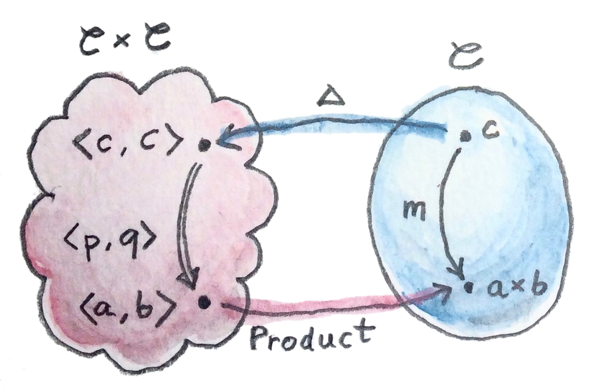

19 Adjunctions (Sketch)
ในคณิตศาสตร์เรามีหลายหลายวิธีของการพูดว่าสิ่งหนึ่งนั้นเหมือนอีกอันหนึ่ง ในแบบที่ัดกุมที่สุดคือความเท่ามัน สองอย่างนั้นเท่ากันถ้าไม่มีวิธีในการแยกพวมมันออกมา มันอาจจะถูกแทนที่สำหรับอีกตัวหนึ่งในทุกๆบริบทที่สามารถจิตนาการได้ ตัวอย่างเช่น คุณได้สังเกตไหมว่าเราได้ใช้ความเท่ากันของmorphsimในทุกครั้งที่เราพูดเกี่ยวกับdiagramที่commute? นั้นก็เพราะว่าmorphsimก่อให้เกิดset(hom-set)และสมาชิกของsetสามารถถูกเทียบสำหรับความเท่ากัน
แต่ความเท่ากันนั้นมักจะเข้มงวดเกินไป ได้มีตัวอย่างมากมายของสิ่งที่เหมือนสำหรับทุกๆความตั้งใจและวัตถุประสงค์ โดยที่ไม่ต้องเท่ากันจริงๆ ตัวอย่างเช่นtypeแบบpair(Bool, Char)นั้นไม่เท่ากับอย่างเข้มงวดกับ(Char, Bool) แต่เราเข้าใจมันว่าพวกมันเก็บข้อมูลเดียวกัน แนวคิดแบบนี้นั้นถูกอธิบายได้โดยisomorphismระหว่างสองtypes (morphismนั้นinvertได้) เนื่องด้วยมันคือmorphsimมันคงโครงสร้างไว้และการที่เป็น”iso”หมายความว่ามันคือส่วนหนึ่งของการเดินทางไปกลับที่คุณจบที่จุดเดียวกัน ไม่สำคัญว่าคุณจะเริ่มด้านใหน ในกรณีของpairs isomorphismถูกเรียกว่าswap
swapเป็นว่ามันคือinverseของตนเอง
19.1 Adjunctionและคู่ของUnit/Counit
ในตอนที่เราพูดเกี่ยวกับcategoryนั้นisomorphicต่อกัน เราได้แสดงมันในรูปแบบของการโยงรัหว่างcategoryต่างๆหรือที่เรียกกันว่าfunctor เราต้องการที่จะสามารถพูดได้ว่าสองcategory\(\textbf{C}\)และ\(\textbf{D}\)นั้นisomorphicกัน ถ้าได้มีfunctor\(R\)(ย่อมาจาก”right”/ด้านขวา)จาก\(\textbf{C}\)ไปยัง\(\textbf{D}\)ที่สามารถถูกinverseได้ ในอีกความหมายหนึ่งได้มีอีกfunctor\(L\)(ย่อมาจาก”left”/ด้านช้าย)จาก\(\textbf{D}\)กลับไปยัง\(\textbf{C}\)ที่ในตอนที่เราประกอบกับ\(R\)นั้นเท่ากับfunctorแบบidentity\(I\) ได้มีสองวิธีที่เป็นไปได้การประกอบกันอย่าง \(R\circ L\)และ\(L\circ R\)และสองidentity functorที่เป็นไปได้ที่หนึ่งในนั้นอยู่ใน\(\textbf{C}\)และอีกอันหนึ่งอยู่ใน\(\textbf{D}\)

แต่นี้คือส่วนที่ยุ่งยาก มันหมายความว่าอะไรสำหรับfunctorทั้งสองในการที่มันจะเท่ากัน? เราหมาถึงอะไรโดยความเท่ากันนี้
\[ R\circ L = I_\textbf{D} \]
หรือสิ่งนี้
\[ L\circ R = I_\textbf{C} \]
มันคงจะสมเหตุสมผลในการนิยามความเท่ากันของfunctorในรูปแบบของควมเท่ากันของวัตถุห สองfunctorในตอนที่กระทำบนวัตถุที่เท่ากัน ควรที่จะสร้างวัตถุที่เท่ากันออกมา แต่โดยเท่าไปเราไม่มีแนวคิดของความเท่ากันของวัตถุcategoryทั่วๆไป มันแค่ไม่เป็นส่วนหนึ่งของคำนิยาม (ถ้าไปให้ลึกกว่านี้คือคำถามว่า”ความเท่ากันจริงๆแล้วหมายความว่าอะไร” เราก็จะจบลงที่Homotopy Type Theory)
คุณอาจจะแย้งว่าfunctorนั้นคือmorphismในcategoryของcategoryดังนั้นพวกมันควรที่จะเทียบความเท่ากันได้ แค่แน่นอนว่าตราบเท่าที เรากำลังพูดเกี่ยวกับcategoryขนาดเล็ก ที่วัตถุก่อให้เกิดset แน่นอนว่าเราสามารถใช้ความเท่ากันของสมาชิกของsetในการเทียบความเท่ากันของวัตถุต่างๆ
แต่จงจำไว้ว่า\(\textbf{Cat}\)นั้นคือ\(\textbf{2}\)-category Hom-setใน\(\textbf{2}\)-categoryมีโครงสร้างเพิ่มเติมคือได้มี2-morphismกระทำระหว่าง1-morphism ใน\(\textbf{Cat}\) 1-morphismคือfunctorและ2-morphismคือการแปลงแบบธรรมชาติ ดังนั้นมันเป็นธรรมชาติ(ไม่ค่อยอยากจะเล่นคำชักเท่าไหร่)มากกว่าในการพิจารณาisomorphismแบบธรรมชาติในฐานะตัวแทนสำหรับความเท่ากันในตอนที่เราพูดเกี่ยวกับfunctor
ดังนั้นแทนที่จะใช้isomorphsimของcategoryต่างๆ มันสมเหตุสมผลในการพิจารณาแนวคิดที่กว้างกว่าของความเท่ากัน categoryทั้งสอง\(\textbf{C}\)และ\(\textbf{D}\)นั้นเท่ากันถ้าเราสามารถหาสองfunctorที่ไปและกลับระหว่างมัน ในอีกความหมายหนึ่งได้มีการแปลงแบบธรรมชาติในสองทิศทางระหว่างการประกอบกัน\(R\circ L\)และfunctor identiy\(I_\textbf{D}\)และอีกตัวหนึ่งจาก\(L\circ R\)ไปยัง\(I_\textbf{C}\) ในที่นี้คือsignaturesของทั้งสองการแปลงแบบธรรมชาติ
\[ \begin{gather*} \eta :: I_{\textbf{D}} \to R \circ L \\ \varepsilon :: L \circ R \to I_{\textbf{C}} \end{gather*} \]
ที่\(\eta\)ถูกเรียกว่าunitและ\(\varepsilon\)คือcounitของadjunction
สังเกคหว่าความไม่ความไม่สมมาตรระหว่างนิยามสองตัวนี้ โดยทั่วไปแล้วเราไม่มีการโยงที่เหลืออย่าง
\[ \begin{gather*} R \circ L \to I_{\textbf{D}} \quad\quad\text{not necessarily} \\ I_{\textbf{C}} \to L \circ R \quad\quad\text{not necessarily} \end{gather*} \]
เพราะว่าความไม่สมมาตรนี้ functor\(L\)จึงถูกเรียกว่าadjointด้านช้าย(left adjoint)ของfunctor\(R\)ในขณะเดียวกันfunctor\(R\)คือadjointด้านขวาของ\(L\) (แน่นอนว่าด้านช้ายและขวาสมเหตุสมผลถ้าคุนวาดdiagramในแบบๆหนึ่ง)
สัญลักษณ์ที่กะทัดรัดสำหรับadjunctionคือ
\[ L\vdash R \]
ในการที่จะเข้าใจadjunctionมากขึ้น เรามาวิเคราะห์unitและcounitในรายละเอียดมากขึ้น
เรามาเริ่มกับunit มันคือการแปลงแบธรรมชาติดังนั้นมันคือชุดของmorphismต่างๆ ถ้ามีวัตถุ\(d\)ใน\(\textbf{D}\) ส่วนประกอบของ\(\eta\)คือmorphismระหว่าง\(Id\)ที่เท่ากับ\(d\)และ\((R\circ L)d\)ที่ในรูปนั้นถูกเรียกว่า\(d'\)
\[ \eta_d :: d \to (R \circ L) d \]
ลองสังเกตถึงการประกอบกันของ\(R\circ L\)ที่เป็นendofunctorใน\(\textbf{D}\)
สมการนี้บอกกเราว่าเราสามารถเลือกวัตถุ\(d\)ใดๆก็ตามใน\(\textbf{D}\)ในฐานะจุดเริ่มต้นของเรา และใช้functorที่เดินทางไปกลับ\(R\circ L\)ในการเลือกวัตถุ\(d'\) แล้วเราก็ยิงลูกศร(ที่ก็คือmorphism\(\eta_d\))ไปยังเป้าหมายของเรา
ในแบบเดียวกัน ส่วนประกอบของcounit\(\varepsilon\)สามารถถูกอธิบายในฐานะ
\[ \varepsilon_{c} :: (L \circ R) c \to c \]
มันบอกเราว่าเราสามารถเลือกวัตถุ\(c\)อะไรก็ตามใน\(\textbf{C}\)ในฐานะเป้าหมายของเรา และใช้functorที่เดินทางไปกลับ\(L \circ R\)ในการเลือก\(c'=(L \circ R) c\) แล้วเราก็ยิงลูกศร(ที่ก็คือmorphism\(\varepsilon\))จากจุดเริ่มต้นไปยังเป้าหมาย
ในอีกวิธีหนึ่งของการมองที่unitและcounitคือการที่ว่าunitให้เราได้นำการประกอบกันของ\(R\circ L\)มาในทุกๆที่ เราสามารถแทรกfunctor identityบน\(\textbf{D}\)ได้ และcounitให้เราได้ลบการประกอบกันของ\(L\circ R\)แทนที่มันกับidentityบน\(\textbf{C}\) ที่นำไปสู่บางเงื่อนไขที่“ตรงไปตรงมา”ของ ความสอดคล้องที่ทำให้แน่ใจว่าการนำมาตามด้วยการลบจะไม่เปลี่นนอะไรเลย
\[ \begin{gather*} L = L \circ I_{\textbf{D}} \to L \circ R \circ L \to I_{\textbf{C}} \circ L = L \\ R = I_{\textbf{D}} \circ R \to R \circ L \circ R \to R \circ I_{\textbf{C}} = R \end{gather*} \]
สิ่งเหล่านี้เรียกว่าเอกลักษณ์สามเหลี่ยม(triangular identities)เพราะว่ามันทำให้diagramเหล่านี้commute
สิ่งเหล่านี้คือdiagramในcategoryของfunctorที่ลูกศรนั้นคือการแปลงแบบธรรมชาติและการประกอบกันของมันเป็นแบบการประกอบกันในแนวนอนของการแปลงแบบธรรมชาติ ในส่วนประกอบต่างๆ เอกลักษณ์เหล่านี้กลายมาเป็น
\[ \begin{gather*} \varepsilon_{L d} \circ L \eta_d = \operatorname{id}_{L d} \\ R \varepsilon_{c} \circ \eta_{R c} = \operatorname{id}_{R c} \end{gather*} \]
เรามักจะเห็นunitและcounitในHaskellภายใต้ชื่อที่แตกต่างกัน unitนั้นถูกรู้จักในฐานะreturn(หรือpureในนิยามของApplicative)
return :: d -> m dและcounitในฐานะextract
extract :: w c -> cในที่นี้mคือ(endo-)functorที่ตรงกันกับ\(R\circ L\)และwคือ(endo-)functorที่ตรงกันกับ\(L\circ R\) แล้วในสิ่งที่เราจะเห็นต่อไปจากนี้ พวกมันคือส่วนของนิยามของmonadและcomonadตามลำดับ
ถ้าคุณคิดถึงendofunctorในฐานะภาชนะ unit(หรือreturn)คือfunctionแบบ polymorphicที่สร้างกล่องเริ่มต้นรอบๆค่าของtypeทั่วๆไป counit(หรือextract)ทำในทางกลับกันคือมันดึงหรือสร้างค่าๆเดียวจากภาชนะ
เราจะเห็นหลังจากนี้ว่าทุกๆคู่ของfunctorแบบadjointนิยามmonadและcomonad ในทางกลับกันทุกๆmonadหรือcomonadอาจจะถูกแยกตัวประกอบไปยังคู่ของfunctorแบบadjoint(แต่การแยกตัวประกอบแบบนี้นั้นไม่เป็นเอกลักษณ์)
ในHaskellเราใช้monadอย่างมาก แต่เราทำการแยกตัวประกอบของมันไปยังคู่ของfunctorแบบadjointไม่ค่อยบ่อย หลักๆก็เพราะว่าfunctorเหล่านี้อาจจะมักจะนำเราออกไปยัง\(\textbf{Hask}\)
แต่เราสามารถนิยามadjunctionของendofunctorในHaskell นี้คือส่วนของนิยามนำมาจากData.Functor.Adjunction
class (Functor f, Representable u) =>
Adjunction f u | f -> u, u -> f where
unit :: a -> u (f a)
counit :: f (u a) -> aนิยามแบบนี้ต้องการการอธิบายบางอย่าง อย่างแรกมันอธิบายtypeแบบclassที่มีหลายparameter(ที่ทั้งสองparameterเป็นfและu) มันสร้างความสัมพันธ์ที่เรียกว่าAdjunctionระหว่างcontructorของtypeทั้งสอง
เงื่อนไขเพิ่มเติมหลังจากขีดตั้ง คืกการเจาะจงความเกี่ยวข้องกันทางfunction ตัวอย่างเช่นf -> u หมายความว่าuนั้นถูกกำหนดโดยf (ความสัมพันธ์ระหว่างfและuคือfunction ในที่นี้บนcontructorของtype) ในทางกลับกันu > fหมายความว่าถ้าเรารู้ถึงuแล้วfนั้นถูกกำหนดแบบเป็นเอกลักษณ์
ผมจะอธิบายในอีกไม่ช้าว่าทำไมในHaskell เราสามารถกำหนดให้มีเงื่อนไขว่าadjointด้านขวาuเป็นfunctorที่มีตัวแทนได้
19.2 AdjunctionและHom-Sets
ได้มีนิยามของนิยามความเท่ากันของadjunctionในรูปแบบของisomorphismแบบธรรมชาติของhom-set นิยามนี้ผูกอย่างง่ายดายกับการสร้างแบบสากล ที่เราได้ทำการศึกษาไปก่อนหน้านี้ ในทุกๆเวลาที่คุณได้ยิน การที่ว่าได้มีบางmorphismที่เป็นเอกลักษณ์ที่แยกตัวประกอบการสร้างบางตัว คุณควรที่จะคิดของมันในฐานะการโยงของบางsetไปยังhom-set นั้นคือความหมายของ”การเลือกmorphismที่เป็นเอกลักษณ์”
นอกจากนี้ การแยกตัวประกอบมักจะสามารถถูกอธิบายในรูปแบบของการแปลงแบบธรรมชาติ การแยกตัวประกอบเกี่ยวกับdiagramของการcommute(บางmorphismที่เท่ากัยการประกอบกันของmorphismทั้งสอง(ตัวประกอบ)) การแปลงแบบธรรมชาติโยงmorphismไปยังdiagramของการcommute ดังนั้นในการสร้างแบบสากลเราไปจากmorphismไปยังdiagramของการcommuteแล้วก็ไปยังmorphismที่เป็นเอกลักษณ์ เราจบลงที่การโยงจากmorphismไปยังmorphismหรือจากhom-setหนึ่งไปยังอีกอย่างหนึ่ง (มักจะอยู่ในcategoryที่แตกต่างกัน) ถ้าการโยงนี้สามารถinverseได้ แต่ถ้ามันสามารถทำให้กว้างออกไปอย่างแบบธรรมชาติไปทั้งhom-set เรามีadjunction
ความแตกต่างหลักระหว่างการสร้างแบบสากลและadjunctionคือว่า สิ่งหลังถูกนิยามแบบสากลคือสำหรับhom-setท้งหมด ตัวอย่างเช่น การใช้การสร้างแบบสากล คุณสามารถนิยามproductของวัตถุทั้งสองที่ถูกเลือก ถึงแม้ถ้ามันไม่มีตัวตนอยู่สำหรับอีกคู่ของวัตถุในcategoryนั้น แล้วเราจะได้เห็นในอีกไม่ช้า ถ้าproductของคู่ใดๆก็ตามของวัตถุมีตัวตนอยู่ในcategory มันสามารถถูกนิยามผ่านadjunction

นี้คือนิยามทางเลือกของadjunctionโดยการใช้hom-set เหมือนก่อนหน้านี้เรามีสองfunctor \(L::\textbf{D}\rightarrow\textbf{C}\)และ\(R::\textbf{C}\rightarrow\textbf{D}\) เราเลือกวัตถุใดๆก็ตามสองตัวคือ วัตถุที่เป็นจุดเริ่ม\(d\)ใน\(\textbf{D}\) และวัตถุเป้าหมาย\(c\)ใน\(\textbf{C}\) เราสามารถโยงวัตถุที่เป็นจุดเริ่ม\(d\)ไปยัง\(\textbf{C}\)โดยการใช้\(L\) ในตอนนี้ เรามีสองวัตถุใน\(\textbf{C}\)อย่าง\(Ld\)และ\(c\) พวกมันนิยามhom-setว่า
\[ \textbf{C}(L d, c) \]
ในทางเดียวกัน เราสามารถโยงวัตถุเป้าหมาย\(c\)โดยการใช้\(R\) ในตอนนี้เรามีสองวัตถุใน\(\textbf{D}\)อย่าง\(d\)และ\(Rc\) พวกมันก็นิยามhom setว่า
\[ \textbf{D}(d, R c) \]
เราบอกว่า\(L\)คือadjointด้านช้ายไปยัง\(R\)ถ้าต่อเมื่อได้มีisomorphismของhom set
\[ \textbf{C}(L d, c) \cong \textbf{D}(d, R c) \]
มันคือความเป็นธรรมชาติของทั้ง\(d\)และ\(c\) ความเป็นธรรมชาติหมายความว่าวัตถุที่เป็นจุดเริ่ม\(d\)สามารถเปลี่ยนแปลงอย่างเรียบๆใน\(\textbf{D}\) และวัตถุเป้าหมาย\(c\)ใน\(\textbf{C}\) ถ้าให้แม่นยำมากขึ้น เรามีการแปลงแบบธรรมชาติ\(\varphi\)ระหว่างfunctor(แบบcovariant)อย่างว่าทั้งสองจาก\(\textbf{C}\)ไปยัง\(\textbf{Set}\) ในที่นี้คือการกระทำของfunctorเหล่านี้บนวัตถุ
\[ \begin{gather*} c \to \textbf{C}(L d, c) \\ c \to \textbf{D}(d, R c) \end{gather*} \]
ในการแปลงแบบธรรมชาติอีกแบบหนึ่ง\(\psi\)กระทำระหว่างfunctor(แบบcontravariant)ต่อไปนี้
\[ \begin{gather*} d \to \textbf{C}(L d, c) \\ d \to \textbf{D}(d, R c) \end{gather*} \]
การแปลงแบบธรรมชาติทั้งสองต้องสามารถinverseได้
มันง่ายที่จะแสดงว่าสองนิยามของadjunctionนั้นเท่ากัน ตัวอย่างเช่น เราตามมาจากการแปลงแบบunitเริ่มมาจากisomorphismของhom-setคือ
\[ \textbf{C}(L d, c) \cong \textbf{D}(d, R c) \]
เนื่องด้วยisomorphismนี้ทำงานได้สำหรับวัตถุ\(c\)ใดๆก็ตาม มันก็ต้องทำงานได้สำหรับ \(c=Ld\) นั้นก็คือ
\[ \textbf{C}(L d, Ld) \cong \textbf{D}(d, (R\circ L)d) \]
เรารู้ว่าด้านช้ายมือต้องมีอย่างน้อยmorphismหนึ่งนั้นก็คือidentity การแปลงแบบธรรมชาติจะโยงmorphismนี้ไปยังสมาชิกของ\(\textbf{D}(d, (R\circ L)d)\)หรือ การแทรกfunctorแบบidentity\(I\)ก็คือmorphismใน
\[ \textbf{D}(Id, (R\circ L)d) \]
เราได้มาซึ่งขุดของmorphismที่parameterizedโดย\(d\) พวกมันก่อให้เกิดการแปลแบบธรรมชาติระหว่างfunctor\(I\)และfunctor\(R\circ L\) (เงื่อนไขความเป็นธรรมชาตินั้นง่ายที่จะตรวจสอบ) สิ่งนี้คือunit\(\eta\)ของเราจริงๆ
ในทางกลับกัน เริ่มจากการมีอยู่ของunitและcounit เราสามารถนิยามการแปลงระหว่างhom-set ตัวอย่างเช่นเรามาเลือกmorphismใดๆก็ตาม\(f\)ในhom-set\(\textbf{C}(L d, c)\) เราต้องการที่จะนิยาม\(\varphi\)ว่า กระทำบน\(f\)สร้างmorphismใน\(\textbf{D}(d, R c)\)
ได้ไม่มีตัวเลือกมากมาย สิ่งหหนึ่งเราสามารถที่จะลองในการlift\(f\)โดยการใช้\(R\) สิ้งนั้นจะสร้างmorphism\(Rf\)จาก\(R(Ld)\)ไปยัง\(Rc\) (นั้นคือmorphismที่คือสมาชิกของ\(\textbf{D}((R\circ L)d,Rc)\))
สิ่งเราต้องการสำหรับตัวประกอบของ\(\varphi\)คือmorphismจาก\(d\)ไปยัง\(Rc\) นั้นไม่ใช่ปัญหาเนื่องด้วยเราสามารถใช้ตัวประกอบของ\(\eta_d\)ในการได้มาจาก\(d\)ไปยัง\((R\circ L)d\) เราได้ว่า
\[ \varphi_f = Rf\circ \eta_d \]
อีกทิศทางหนึ่งนั้นคล้ายๆกันและก็คือการตามหา\(\psi\)
กลับมาไปยังนิยามของHaskellของAdjunction การแปลงแบบธรรมชาติ\(\varphi\)และ\(\psi\)นั้นถูกแทนที่โดยfunctionแบบpolymorphism(ในaและb)leftAdjunctและrightAdjunctตามลำดับ functor\(L\)และ\(R\)สามารถถูกเรียกว่าfและu
class (Functor f, Representable u) =>
Adjunction f u | f -> u, u -> f where
leftAdjunct :: (f a -> b) -> (a -> u b)
rightAdjunct :: (a -> u b) -> (f a -> b)ความเท่ากันระหว่างการแสดงออกในรูปสูตรของunitและcounitและการแสดงออกในรูปสูตรของleftAdjunctและrightAdjunctนั้นถูกแสดงโดยการโยงแบบนี้
unit = leftAdjunct id
counit = rightAdjunct id
leftAdjunct f = fmap f . unit
rightAdjunct f = counit . fmap fมันเป็นไปตามขั้นตอนในการตามการแปลจากคำอธิบายทางcategoryของadjunctionไปยังโค้ดของHaskell ผมสนับสนุนอย่างมากในการลองทำในฐานะแบบฝึกหัด
ในตอนนี้เราพร้อมแล้วในการอธิบายว่าในHaskellทำไมadjoinค้านขวาเป็นfunctorที่มีตัวแทนได้โดยอัตโนมัติ เหตุผลคือว่าในแบบคร่าวๆอย่าแรก เราสามารถมองcategoryของtypeของHaskellในฐานะcategoryของset
ในcategoryด้านขวา\(\textbf{D}\)เป็น\(\textbf{Set}\) adjointด้านขวาคือfunctorจาก\(\textbf{C}\)ไปยัง\(\textbf{Set}\) functorแบบนี้นั้นสามารถมีตัวแทนได้ถ้าเราสามารถหาวัตถุ\(rep\)ใน\(\textbf{C}\)ในแบบที่ว่าhom-functor\(\textbf{C}(rep,-)\)นั้นisomorphicแบบธรรมชาติไปยัง\(R\) มันกลับมาเป็นว่า ถ้า\(R\)คือadjointด้านขวาของบางfunctor\(L\)จาก\(\textbf{Set}\)ไปยัง\(\textbf{C}\)โดยที่วัตถุแบบนี้ต้องมีตัวตนอยู่ ก็คือมันคือimageสำหรับsetที่มีสมาชิกเดี่ยว\(()\)ภายใต้\(L\)อย่าง
แน่นอนว่าadjunctionบอกเราว่าสองhom-setต่อไปนี้นั้นisomorphicแบบธรรมชาติระหว่างกันคือ
\[ \textbf{C}(L(),c)\cong\textbf{Set}((), Rc) \]
สำหรับ\(c\)มี่ให้มา ด้านขวามือคือsetของfunctionจากsetที่มีสมาชิกเดี่ยว\(()\)ไปยัง\(Rc\) เราได้เห็นก่อนหน้านี้ว่าบางfunctionแบบนี้เลือกสมาชิกหนึ่งจากset\(Rc\) setของfunctionแบบนี้นั้นisomorphicไปยังset\(Rc\) ดังนั้นเรามีว่า
\[ \textbf{C}(L(),c)\cong R \]
ที่แสดงว่า\(R\)นั้นสามารถมีตัวแทนได้อย่างแน่นอน
19.3 ProductจากAdjunction
เราได้แนะนำไปก่อนหน้านี้ถึงบางแนวคิดโดนการใช้การสร้างแบบสากล แนวคิดหลายๆอย่างเหล่านี้ ในตอนที่ถูกนิยามแบบสากล นั้นสามารถถูกแลดงโดนการใช้adjunction ตัวอย่างที่ง่ายแต่ไม่ตรงไปตรงมาคือproduct ส่วนสำคัญของการสร้างแบบสากลของproductคือความสามารถในการแยกตัวประกอบ สิ่งที่เหมือนproductใดๆก็ตามที่มีคุณสมบัติผ่านproductแบบสากล
ถ้าให้แน่นอน productของสองวัตถุ\(a\)และ\(b\)คือวัตถุ\((a\times b)\) (หรือ (a, b)ในfunctionของHaskell)ที่มาคู่กับสองmorphism \(fst\)และ\(snd\)ในการที่ว่า สำหรับอีก\(c\)ที่มีคุณสมบัติที่มากับสองmorphism\(p::c\rightarrow a\)และ\(q::c\rightarrow b\) ได้มีmorphismที่เป็นเอกลักษณ์อย่าง\(m::c\rightarrow (a,b)\)ที่แยกตัวประกอบ\(p\)และ\(q\)ผ่าน\(fst\)และ\(snd\)
ในการที่เราได้เห็นไปก่อนหน้านี้ ในHaskell เราสามารถที่จะเขียนfactorizerที่สร้างmorphismแบบนี้จากprojectionสองตัวอย่าง
factorizer :: (c -> a) -> (c -> b) -> (c -> (a, b))
factorizer p q = \x -> (p x, q x)มันง่่ายที่จะตรวจสอบเงื่อนไขการแยกตัวประกอบ
fst . factorizer p q = p
snd . factorizer p q = qเรามีการโยงที่นำpairของmorphismpและqและสร้างmorphismอีกตัวอย่างm = factorizer p q
อะไรคือวิธีการที่เราสามารถแปลสิ่งนี้ไปยังการโยงระหว่างhom-setทั้งสองที่เราต้องการในการนิยามadjunction? เคล็ดลับคือการไปยังข้างนอกของ\(\textbf{Hask}\)และมองคู่ของmorphismในฐานะmorphismเดี่ยวในcategoryแบบproduct
ให้ผมได้เตือนคุณว่าcategoryแบบproductคืออะไร นำสองcategory\(\textbf{C}\)และ\(\textbf{D}\)ใดๆก็ตาม วัตถุในcategoryแบบproductคือตู่ของmorphsim หนึ่งในนั้นมาจาก\(\textbf{C}\)และอีกตัวจาก\(\textbf{D}\)
ในการนิยามproductในบางcategory\(\textbf{C}\) เราอาจจะเริ่มกับcategoryแบบproduct\(\textbf{C}\times\textbf{C}\) คู่ของmorphismจาก\(\textbf{C}\)คือmorphismเดี่ยวในcategoryแบบproduct\(\textbf{C}\times\textbf{C}\)

มันอาจจะสับสนเล็กน้อยในตอนแรกที่เรากำลังใช้categoryแบบproductในการนิยามproduct แต่พวกมันคือproductที่แตกต่างกัน เราไม่ต้องการการสร้างแบบสากลในการนิยามcategoryแบบproduct ทั้งหมดที่เราต้องการคือของคู่ของวัตถุและคู่ของmorphism
แต่คู่ของวัตถุจาก\(\textbf{C}\)นั้นไม่ใช่วัตถุใน\(\textbf{C}\) มันคือวัตถุในcategory\(\textbf{C}\times\textbf{C}\)ที่แตกต่างกัน เราสามารถที่จะเขียนpairในแบบอย่างเป็นทางการว่า\(\langle a,b\rangle\)ที่\(a\)และ\(b\)คือวัตถุของ\(\textbf{C}\) ในอีกด้านหนึ่ง การสร้างแบบสากลนั้นจำเป็นในการนิยามวัตถุ\(a\times b\)(หรือ(a, bในHaskell) ที่คือวัตถุในcategoryเดียวกัน วัตถุนี้นั้นควรที่จะแสดงคู่\(\langle a,b\rangle\)ในรูปแบบที่กำหนดโดยการสร้างแบบสากล มันไม่จำเป็นต้องมีตัวตนอยู่และถ้ามันมีตัวตนอยู่สำหรับบางตัว อาจจะไม่มีตัวตนในอีกคู่ของวัตถุใน\(\textbf{C}\)
เรามามองที่factorizerในฐานะการโยงของhom-set homomorphismตัวแรกนั้นคือcategoryแบบproduct\(\textbf{C}\times\textbf{C}\)และตัวที่สองใน\(\textbf{C}\) morphismแบบทั่วไปใน\(\textbf{C}\timess\textbf{C}\)อาจจะเป็นคู่ของmorphism\(\langle f, g\rangle\)ว่า
\[ \begin{gather*} f :: c' \to a \\ g :: c'' \to b \end{gather*} \]
ที่\(c''\)นั้นอาจจะแตกต่างจาก\(c'\) แต่ในการนิยามproduct เรานั้นสนใจในmorphismพิเศษใน\(\textbf{C}\times\textbf{C}\) คู่\(p\)และ\(q\)ที่ร่วมกันใช้วัตถุจุดเริ่ม\(c\) มันไม่มีปัญหาเพราะในนิยามของadjunction วัตถุจุดเริ่มของhom-setด้านช้ายนั้นๆไม่ใช่วัตถุทั่วไป (มันคือผลของfunctor\(L\)ด้านช้ายกระทำบนบางวัตถุจากcategoryด้านขวา) functorที่ตรงกับเงื่อนไขเหล่านี้นั้นเดาไมยาก มันคือdiagonal functor\(\Delta\)จาก\(\textbf{C}\)ไปยัง\(\textbf{C}\times\textbf{C}\) ที่การกระทำบนวัตถุว่า
\[ \Delta c = \langle c,c\rangle \]
ดังนั้นHom-setด้านช้ายมือในadjunctionของเราควรที่จะเป็น
\[ (\textbf{C}\times{}\textbf{C})(\Delta\ c, \langle a, b \rangle) \]
มันคือhom-setในcategoryของproduct สมาชิกของมันคือคู่ของmorphismที่เราเห็นมันในฐานะargumentของfactorizerว่า
\[ (c \to a) \to (c \to b) \ldots{} \]
Hom-setในด้าขวามืออยู่ใน\(\textbf{C}\)และมันไปยังระหว่างวัตถุที่เป็นจุดเริ่ม\(c\)และผลของบางfunctor\(R\)กระทำบนวัตถุเป้าหมายใน\(\textbf{C}\times\textbf{C}\)นั้นคือfunctorที่โยงคู่\(\langle a,b\rangle\)ไปยังวัตถุproduct \(a\times b\) เรามองสมาชิกนี้ของhom-setในฐานะผลของfactorizerอย่าง
\[ \ldots{} \to (c \to (a, b)) \]

เรายังไม่มีadjunctionเต็มๆ สำหรับสิ่งนั้นเราต้องการfactorizerของเราเป็นอย่างแรกที่จะสามารถinvertได้ (เรากำลังสร้างisomorphismระหว่างhom-set) inverseของfactorizerควรที่จะเริ่มจากmorphism\(m\) (ที่เป็นmorphismจากบางวัตถุ\(c\)ไปยังวัตถุproduct\(a\times b\)) ในอีกความหมายหนึ่ง\(m\)ควรที่จะเป็นสมาชิกของ
\[ \textbf{C}(c,a\times b) \]
Factorizerที่เป็นinverseควรที่จะโยง\(m\)ไปยังmorphism\(\langle p,q\rangle\)ใน\(\textbf{C}\times\textbf{C}\)ที่ไปจาก\(\langle c,c\rangle\)ไปยัง\(\langle q,b\rangle\) ในอีกความหมายหนึ่งmorphismที่เป็นสมาชิกของ
\[ (\textbf{C}\times{}\textbf{C})(\Delta\ c, \langle a, b \rangle) \]
ถ้าการโยงนี้มีตัวตนอยู่ เราสรุปว่าได้มีadjointด้านขวาไปยังdiagonal functor functorนั้นนิยามproduct
ในHaskellเราสามารถสร้างinverseของfactorizerโดยประกอบmกับfstและsndตามลำดับ
p = fst . m
q = snd . mในการทำให้การพิสูจน์สำเสร็จของความเท่ากันของสองวิธีในการนิยามproduct เราก็ต้องการที่จะแสดงว่าการโดยงระหว่างhom-setนั้นnaturalใน\(a\),\(b\)และ\(c\) ผมจะเหลือไว้ในฐานะบทฝึกหัดสำหรับผู้อ่านที่ทุ่มเท
ในการสรุปสิ่งที่เราได้ทำคือproductแบบcategoryอาจจะถูกนิยามแบบสากลในฐานะadjointด้านขวาของdiagonal functorอย่าง
\[ (\textbf{C}\times{}\textbf{C})(\Delta\ c, \langle a, b \rangle) \cong \textbf{C}(c, a\times{}b) \]
ในที่นี้\(a\times b\)คือผลของการกระทำของfunctor adjointด้านขวา Productบนคู่\(\langle a,b\rangle\) สังเกตว่าfunctorใดๆก็ตามจาก\(\textbf{C}\times\textbf{C}\)คือbifunctorดังนั้นProducttคือbifunctor ในHaskell bifunctor Productนั้นถูกเขียนแค่ๆว่า (,) คุณสามารถใช้มันกับสองtypeและได้มาซึ่งtypeแบบproductตัวอย่างเช่น
(,) Int Bool ~ (Int, Bool)19.4 ExponentialจากAdjunction
Exponential\(b^a\)หรือวัตถุfunction\(a\Rightarrow b\)สามารถถูกนิยามโดยการใช้การสร้างแบบสากล การสร้างแบบนี้ ถ้ามันมีอยู่สำหรับทุกๆคู่ของวัตถุ สามารถถูกมองในฐานะadjunction อีกครั้งที่เคล็ดลับคือการรวมไว้ในประโยคนั้น
สำหรัยวัตถุ\(z\)ใดๆก็ตามกับmorphism\(g::z\times a\rightarrow b\)ได้มีmorphismที่เป็นเอกลักษณ์ \(h::z\rightarrow(a\Rightarrow b)\)
ประโยคนี้ก่อให้เกิดการโยงระหว่างhom-set
ในกรณีนี้ เรากำลังทำงานกับวัตถุในcategoryเดียวกัน ดังนั้นสองadjoint functorคือendofunctor (endo-)functorด้านช้าย\(L\)ในตอนที่กระทำบนวัตถุ\(z\)ก่อให้เกิด\(z\times a\) มันคือfunctorที่ตรงกันกับการนำproductกับบาง\(a\)ที่คงที่
(endo-)functorด้านขวา\(R\) ในการกระทำบน\(b\)ก่อให้เกิดวัตถุfunction \(a\Rightarrow b\) (หรือ\(b^a\)) ในอีกครั้ง\(a\)นั้นคงที่ adjunctionระหว่างfunctorเหล่านี้นั้นมักจะถูกเขียนในฐานะ
\[ -\times a \dashv (-)^a \]
การโยงของhom-setที่อยู่ข้างใต้adjunctionนี้นั้นถูกมองอย่างชัดเจนโดยการเขียนใหม่diagramที่เราได้ใช้ในการสร้างแบบสากล

สังเกตว่าmorphism evalนั้นไม่เป็นอย่างอื่นนอกจากcounitของadjunctionนั้น
\[ (a \Rightarrow b)\times{}a \to b \]
ที่
\[ (a \Rightarrow b)\times{}a = (L \circ R) b \]
ผมได้กล่าวถึงก่อนหน้านี้ว่าการสร้างแบบสากลนิยามวัตถุที่เป็นเอกลักษณ์ขึ้นอยู่กับisomorphism นั้นคือเหตุผลว่าทำไมเรามีproduct(เดี่ยวๆ)และexponential(เดี่ยวๆ) คุณสมบัติแปลไปเป็นadjunctionด้วยคือถ้าfunctorมีadjoint adjointนี้นั้นเป็นเอกลักษณ์ที่ขึ้นอยู่isomorphism
19.5 โจทย์ท้าทาย
- ลองหาsquareความเป็นธรรมชาติสำหรับ\(\psi\) การแปลงระหว่างfunctor(แบบcontravariant)\[\begin{gather*}a \to \textbf{C}(L a, b) \\a \to \textbf{D}(a, R b)\end{gather*}\]
- ลองหาcounit\(\varepsilon\)เริ่มจากisomorphismของhom-setในนิยามที่สองของadjunction
- ทำให้การพิสูจน์สมบูรณ์ของความเท่ากับของสองนิยามของadjunction
- แสดงว่าcoproductสามารถถูกนิยามโดยadjunction เริ่มจากนิยามของตัวแยกตัวประกอบสำหรับcoproduct
- แสดงว่าcoproductคือadjointด้านช้ายของdiagonal functor
- นิยามadjunctionระหว่างproductและวัตถุfunctionในHaskell